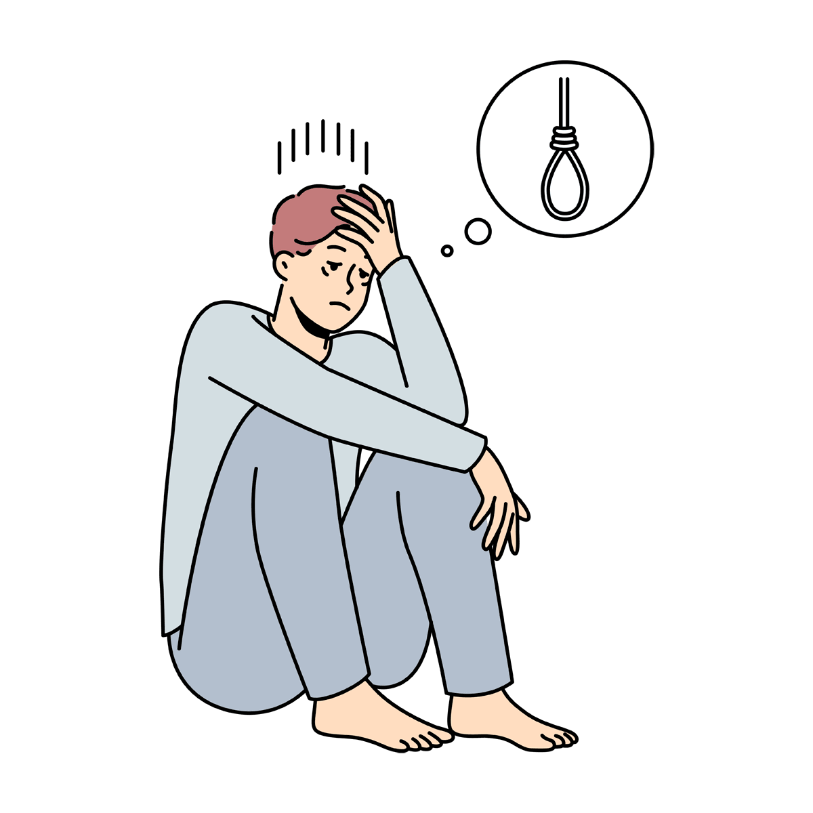
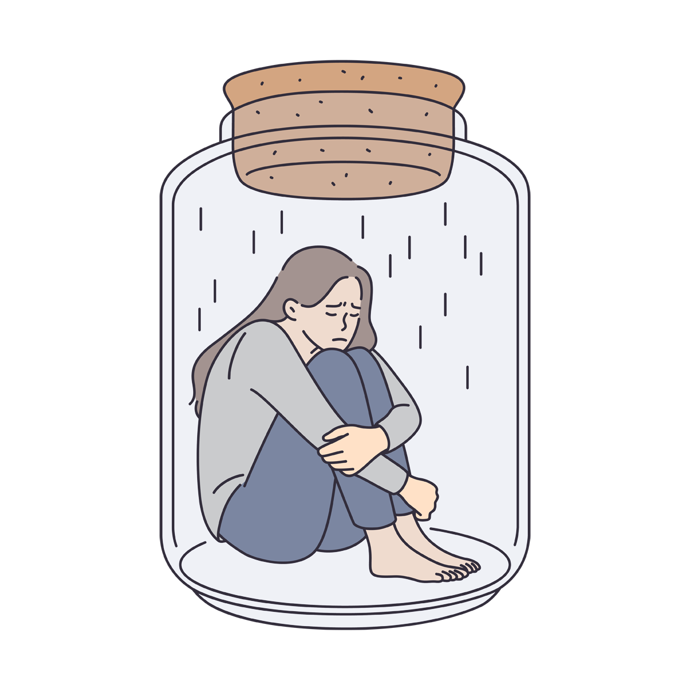
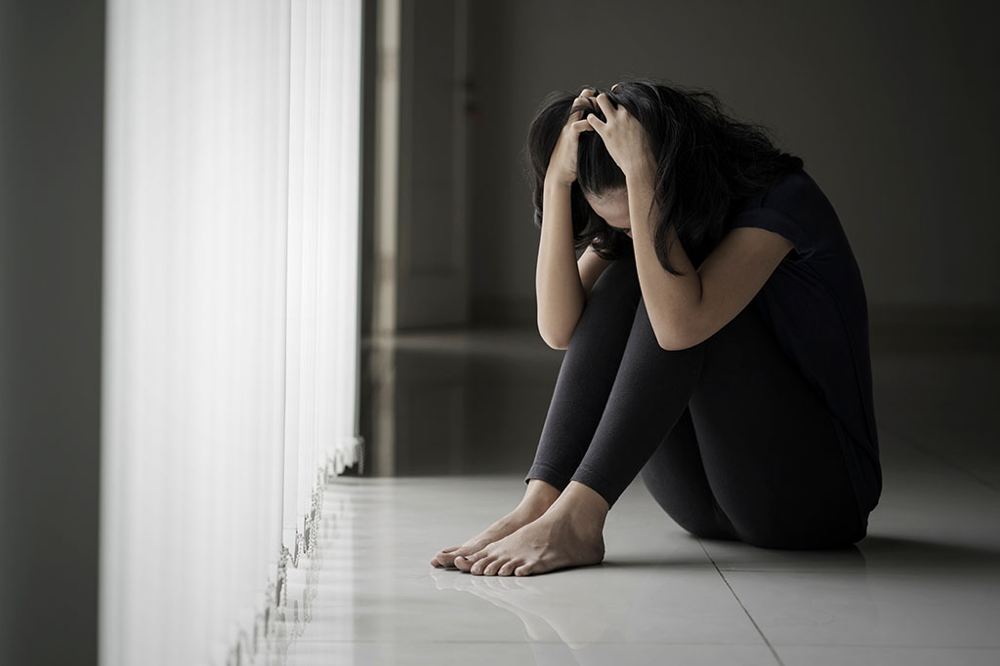

 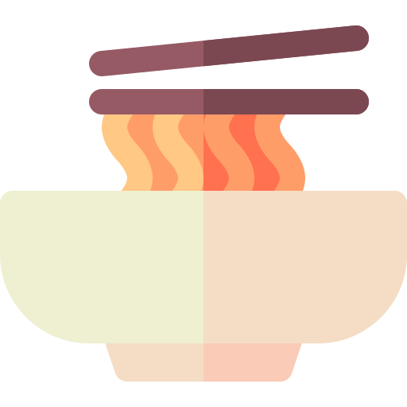
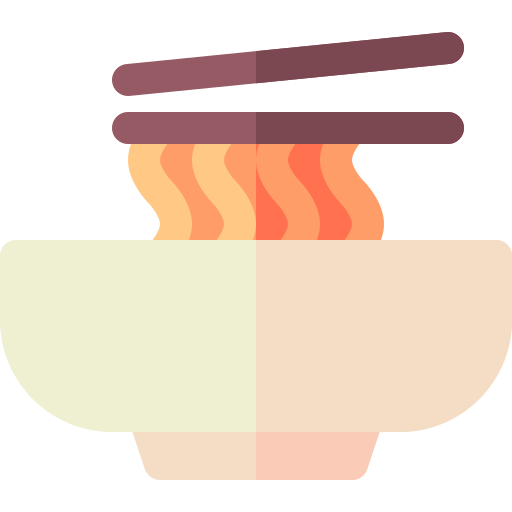
GANGGUAN KESEHATAN MENTAL PADA REMAJA
JASKOJI
Melayani sepenuh hati
Masa remaja merupakan masa transisi dari masa kanak-kanak ke masa dewasa. Pada masa ini, remaja mengalami berbagai perubahan fisik, emosional, dan sosial. Perubahan-perubahan tersebut dapat menimbulkan stres dan tekanan, yang dapat meningkatkan
risiko terjadinya gangguan kesehatan mental.
Gangguan Kecemasan
Gangguan kecemasan adalah gangguan mental yang ditandai dengan perasaan cemas yang berlebihan dan tidak terkendali. Kecemasan dapat muncul dalam berbagai bentuk, seperti rasa khawatir, gelisah, takut, dan panik.
Gangguan kecemasan yang sering terjadi pada remaja antara lain:
Gangguan kecemasan umum (generalized anxiety disorder, GAD): ditandai dengan perasaan cemas yang berlebihan dan tidak terkendali, yang dapat berlangsung selama beberapa minggu atau lebih.
Gangguan panik: ditandai dengan serangan panik yang tiba-tiba dan berulang.
Fobia spesifik: ditandai dengan ketakutan yang berlebihan dan tidak rasional terhadap suatu objek atau situasi tertentu.
Gangguan kecemasan sosial: ditandai dengan rasa cemas yang berlebihan dan tidak terkendali dalam situasi sosial.
Gangguan panik: ditandai dengan serangan panik yang tiba-tiba dan berulang.
Fobia spesifik: ditandai dengan ketakutan yang berlebihan dan tidak rasional terhadap suatu objek atau situasi tertentu.
Gangguan kecemasan sosial: ditandai dengan rasa cemas yang berlebihan dan tidak terkendali dalam situasi sosial.
Depresi
Depresi adalah gangguan mental yang ditandai dengan perasaan sedih, putus asa, dan kehilangan minat atau kesenangan dalam aktivitas sehari-hari. Depresi dapat menyebabkan berbagai masalah, seperti gangguan tidur, gangguan makan, dan kesulitan
berkonsentrasi.
Depresi merupakan gangguan kesehatan mental yang serius dan dapat berdampak negatif terhadap kehidupan remaja. Remaja yang mengalami depresi berisiko lebih tinggi untuk melakukan bunuh diri.
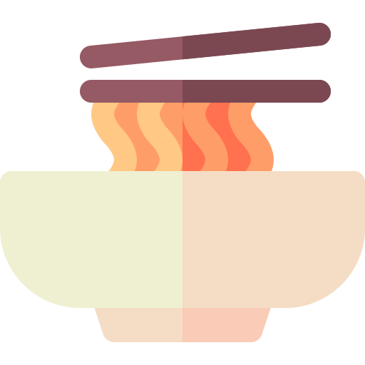
Gangguan Perilaku
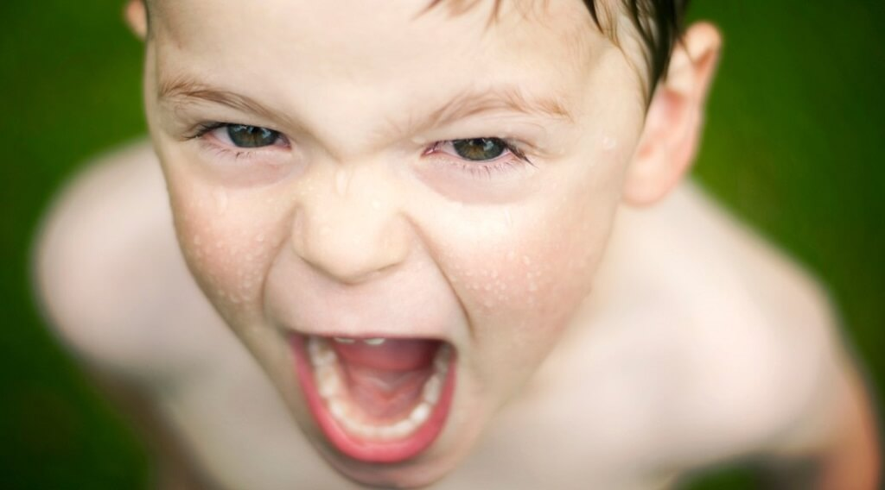
Gangguan perilaku adalah gangguan mental yang ditandai dengan perilaku yang menyimpang dari norma sosial. Gangguan perilaku yang sering terjadi pada remaja antara lain:
Penyebab Gangguan Kesehatan Mental pada Remaja
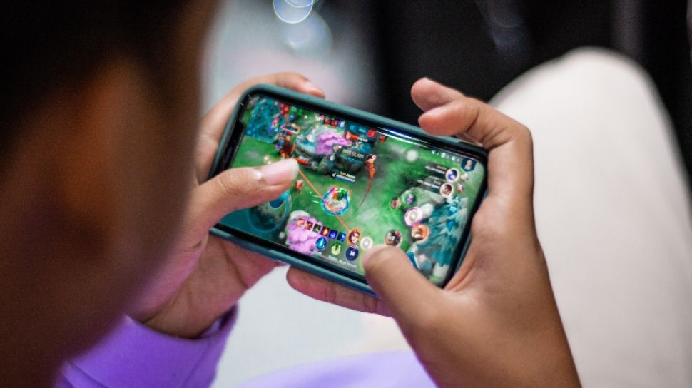
Penyebab gangguan kesehatan mental pada remaja tidak sepenuhnya diketahui. Namun, diduga ada beberapa faktor yang dapat meningkatkan risiko terjadinya gangguan kesehatan mental pada remaja, antara lain:
Faktor genetik: gangguan kesehatan mental dapat diturunkan dari orang tua ke anak.
Faktor lingkungan: stres, trauma, dan pelecehan dapat meningkatkan risiko terjadinya gangguan kesehatan mental pada remaja.
Faktor biologis: perubahan hormon dan otak selama masa remaja dapat meningkatkan risiko terjadinya gangguan kesehatan mental.
Faktor lingkungan: stres, trauma, dan pelecehan dapat meningkatkan risiko terjadinya gangguan kesehatan mental pada remaja.
Faktor biologis: perubahan hormon dan otak selama masa remaja dapat meningkatkan risiko terjadinya gangguan kesehatan mental.
Gejala Gangguan Kesehatan Mental pada Remaja
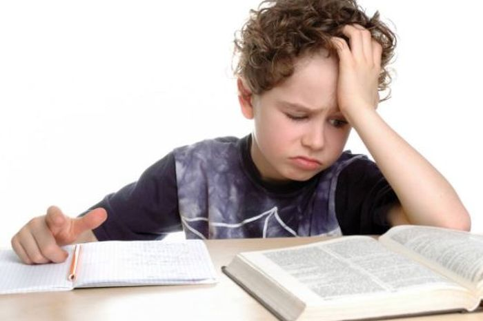
Gejala gangguan kesehatan mental pada remaja dapat bervariasi, tergantung pada jenis gangguannya. Namun, secara umum, gejala gangguan kesehatan mental pada remaja dapat meliputi:
Perubahan perilaku: seperti mudah marah, menarik diri dari lingkungan sosial, atau melanggar aturan.
Perubahan suasana hati: seperti merasa sedih, cemas, atau marah secara berlebihan.
Perubahan fisik: seperti gangguan tidur, gangguan makan, atau kelelahan.
Kesulitan berkonsentrasi.
Masalah belajar.
Gangguan hubungan sosial.
Perubahan suasana hati: seperti merasa sedih, cemas, atau marah secara berlebihan.
Perubahan fisik: seperti gangguan tidur, gangguan makan, atau kelelahan.
Kesulitan berkonsentrasi.
Masalah belajar.
Gangguan hubungan sosial.
Penanganan Gangguan Kesehatan Mental pada Remaja
Penanganan gangguan kesehatan mental pada remaja tergantung pada jenis gangguannya. Namun, secara umum, penanganan gangguan kesehatan mental pada remaja dapat meliputi:
Terapi: terapi merupakan salah satu penanganan utama untuk gangguan kesehatan mental. Terapi dapat membantu remaja untuk memahami dan mengatasi masalah yang mereka alami.
Obat-obatan: obat-obatan dapat digunakan untuk membantu mengatasi gejala gangguan kesehatan mental.
Dukungan keluarga dan teman: dukungan dari keluarga dan teman dapat membantu remaja untuk mengatasi gangguan kesehatan mentalnya.
Obat-obatan: obat-obatan dapat digunakan untuk membantu mengatasi gejala gangguan kesehatan mental.
Dukungan keluarga dan teman: dukungan dari keluarga dan teman dapat membantu remaja untuk mengatasi gangguan kesehatan mentalnya.
Pencegahan Gangguan Kesehatan Mental pada Remaja
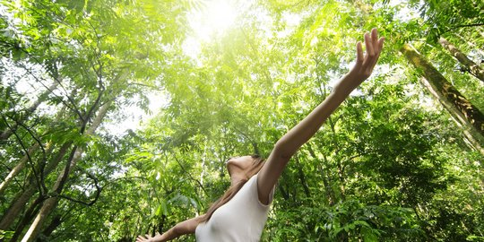
Ada beberapa hal yang dapat dilakukan untuk mencegah terjadinya gangguan kesehatan mental pada remaja, antara lain:
Menciptakan lingkungan yang positif dan mendukung: lingkungan yang positif dan mendukung dapat membantu remaja untuk merasa aman dan nyaman.
Meningkatkan keterampilan koping: keterampilan koping yang baik dapat membantu remaja untuk mengatasi stres dan tekanan.
Meningkatkan kesadaran akan kesehatan mental: remaja perlu menyadari pentingnya kesehatan mental dan bagaimana cara menjaganya.
Meningkatkan keterampilan koping: keterampilan koping yang baik dapat membantu remaja untuk mengatasi stres dan tekanan.
Meningkatkan kesadaran akan kesehatan mental: remaja perlu menyadari pentingnya kesehatan mental dan bagaimana cara menjaganya.
Jika Anda atau orang yang Anda kenal mengalami gangguan kesehatan mental, segeralah cari bantuan profesional. Pengobatan dan dukungan yang tepat dapat membantu remaja untuk mengatasi gangguan kesehatan mentalnya dan menjalani hidup yang sehat
dan bahagia.

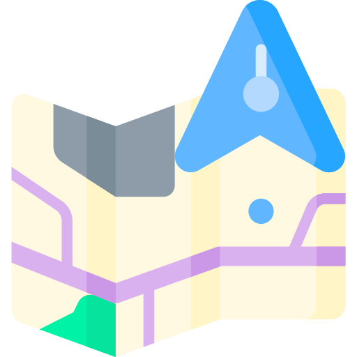

JASKOJI
Melayani sepenuh hati
ahsanulfariz@gmail.com
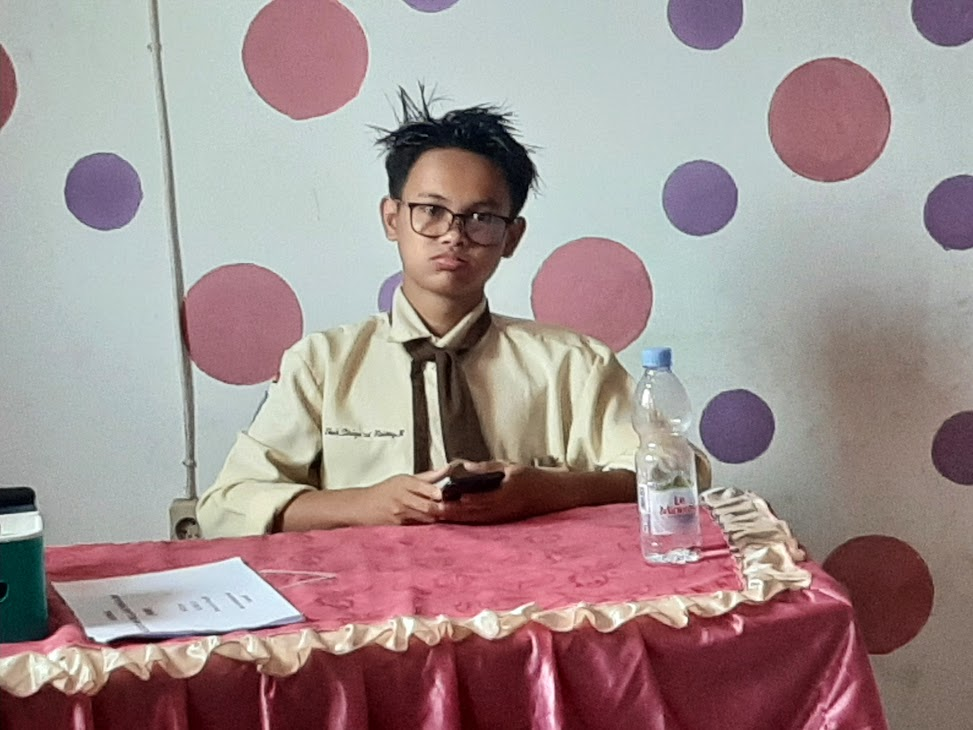
Rahman
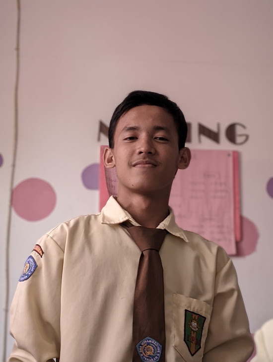
Nazril Irham
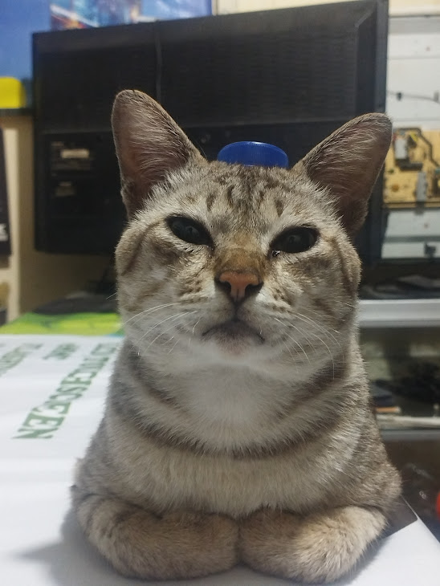Azri
2023-2024 Tugas Mapel Bahasa Indonesia